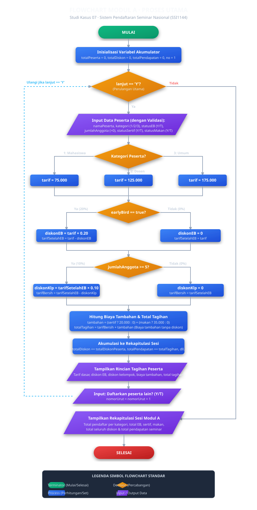

Modul A · Proses Utama
Pendaftaran Peserta
Seminar Nasional
Modul A menangani input data peserta, menghitung tarif berdasarkan kategori, menerapkan diskon early bird dan kelompok, serta menampilkan rincian tagihan per peserta.
Penanggung Jawab
| Nama | Riflo Ahmad Nendriansyah |
| NIM | 322610018 |
| Tanggung Jawab | Modul A · Proses Utama |
Algoritma Deskriptif
- Tampilkan header program (judul dan informasi mata kuliah).
- Inisialisasi semua variabel akumulator dengan nilai awal nol.
- Set variabel
lanjutdengan nilai'Y'sebagai kondisi awal perulangan. - Selama
lanjutbernilai'Y', kerjakan langkah berikut:- Tampilkan nomor pendaftaran saat ini.
- Baca nama peserta; tolak dan minta ulang jika kosong.
- Baca kategori (1/2/3); tolak jika bukan 1, 2, atau 3.
- Baca status early bird (Y/T); tolak input selain keduanya.
- Baca jumlah anggota kelompok; tolak jika nol atau negatif.
- Baca pilihan sertifikat cetak (Y/T).
- Baca pilihan paket makan (Y/T).
- Tentukan tarif dasar sesuai kategori peserta.
- Jika early bird, hitung diskon EB = 20% dari tarif dasar.
- Hitung tarif setelah EB = tarif dasar dikurangi diskon EB.
- Jika jumlah anggota 5 atau lebih, hitung diskon kelompok = 10% dari tarif setelah EB.
- Hitung tarif bersih = tarif setelah EB dikurangi diskon kelompok.
- Hitung biaya tambahan (sertifikat + makan, tidak terkena diskon).
- Hitung total tagihan = tarif bersih + biaya tambahan.
- Tambahkan data peserta ke variabel akumulator rekapitulasi.
- Tampilkan rincian tagihan peserta secara lengkap.
- Tambah nomor urut pendaftaran.
- Tanya operator apakah ingin mendaftar peserta lain (Y/T).
- Setelah perulangan selesai, tampilkan rekapitulasi sesi.
- Program selesai.
Pseudocode
PSEUDOCODE
modul_a
PROGRAM SistemPendaftaranSeminar
KONSTANTA:
TARIF_MAHASISWA = 75000
TARIF_DOSEN = 125000
TARIF_UMUM = 175000
DISKON_EARLY_BIRD = 0.20
DISKON_KELOMPOK = 0.10
MIN_ANGGOTA = 5
BIAYA_SERTIFIKAT = 20000
BIAYA_MAKAN = 35000
VARIABEL AKUMULATOR:
totalPesertaMahasiswa, totalPesertaDosen, totalPesertaUmum : INTEGER = 0
totalEarlyBird, totalSertifikat, totalMakan : INTEGER = 0
totalDiskon, totalPendapatan : REAL = 0
nomorUrut : INTEGER = 1
lanjut : KARAKTER
MULAI
Tampilkan header
lanjut <- 'Y'
SELAMA lanjut = 'Y' KERJAKAN
Tampilkan "PENDAFTARAN #" + nomorUrut
// Input dengan validasi
ULANGI
Baca namaPeserta
SAMPAI namaPeserta tidak kosong
ULANGI
Baca kategori
SAMPAI kategori termasuk {1, 2, 3}
ULANGI
Baca statusEB
SAMPAI statusEB termasuk {'Y', 'T'}
earlyBird <- (statusEB = 'Y')
ULANGI
Baca jumlahAnggota
SAMPAI jumlahAnggota > 0
kelompok <- (jumlahAnggota >= MIN_ANGGOTA)
ULANGI
Baca statusSertif
SAMPAI statusSertif termasuk {'Y', 'T'}
pesanSertifikat <- (statusSertif = 'Y')
ULANGI
Baca statusMakan
SAMPAI statusMakan termasuk {'Y', 'T'}
pesanMakan <- (statusMakan = 'Y')
// Proses perhitungan
JIKA kategori = 1 MAKA tarif <- TARIF_MAHASISWA
JIKA kategori = 2 MAKA tarif <- TARIF_DOSEN
JIKA kategori = 3 MAKA tarif <- TARIF_UMUM
nominalDiskonEB <- 0
JIKA earlyBird MAKA
nominalDiskonEB <- tarif x DISKON_EARLY_BIRD
AKHIR JIKA
tarifSetelahEB <- tarif - nominalDiskonEB
nominalDiskonKelompok <- 0
JIKA kelompok MAKA
nominalDiskonKelompok <- tarifSetelahEB x DISKON_KELOMPOK
AKHIR JIKA
tarifBersih <- tarifSetelahEB - nominalDiskonKelompok
biayaTambahan <- 0
JIKA pesanSertifikat MAKA biayaTambahan <- biayaTambahan + BIAYA_SERTIFIKAT
JIKA pesanMakan MAKA biayaTambahan <- biayaTambahan + BIAYA_MAKAN
totalTagihan <- tarifBersih + biayaTambahan
totalDiskonPeserta <- nominalDiskonEB + nominalDiskonKelompok
// Akumulasi
JIKA kategori = 1 MAKA totalPesertaMahasiswa <- totalPesertaMahasiswa + 1
JIKA kategori = 2 MAKA totalPesertaDosen <- totalPesertaDosen + 1
JIKA kategori = 3 MAKA totalPesertaUmum <- totalPesertaUmum + 1
JIKA earlyBird MAKA totalEarlyBird <- totalEarlyBird + 1
JIKA pesanSertifikat MAKA totalSertifikat <- totalSertifikat + 1
JIKA pesanMakan MAKA totalMakan <- totalMakan + 1
totalDiskon <- totalDiskon + totalDiskonPeserta
totalPendapatan <- totalPendapatan + totalTagihan
// Output rincian tagihan
Tampilkan nama, kategori, jumlahAnggota, earlyBird
Tampilkan tarif, diskonEB, diskonKelompok, tarifBersih
Tampilkan biayaTambahan
Tampilkan totalDiskonPeserta, totalTagihan
nomorUrut <- nomorUrut + 1
ULANGI
Baca lanjut
SAMPAI lanjut termasuk {'Y', 'T'}
AKHIR SELAMA
// Rekapitulasi sesi
Tampilkan totalPesertaMahasiswa, totalPesertaDosen, totalPesertaUmum
Tampilkan totalEarlyBird, totalSertifikat, totalMakan
Tampilkan totalDiskon, totalPendapatan
SELESAIFlowchart

Source Code
C++
src/modul_a.cpp
#include <iostream>
#include <string>
#include <iomanip>
#include <cmath>
#include <sstream>
using namespace std;
// ---- Konstanta tarif dasar ----
const double TARIF_MAHASISWA = 75000.0;
const double TARIF_DOSEN = 125000.0;
const double TARIF_UMUM = 175000.0;
// ---- Konstanta diskon ----
const double DISKON_EARLY_BIRD = 0.20;
const double DISKON_KELOMPOK = 0.10;
const int MIN_ANGGOTA_KELOMPOK = 5;
// ---- Konstanta biaya tambahan ----
const double BIAYA_SERTIFIKAT = 20000.0;
const double BIAYA_MAKAN = 35000.0;
// Baca satu baris, trim spasi depan-belakang
string bacaBaris(const string &pertanyaan) {
string baris;
cout << pertanyaan;
getline(cin, baris);
while (!baris.empty() && (baris.back() == ' ' || baris.back() == '\r'))
baris.pop_back();
size_t mulai = baris.find_first_not_of(' ');
if (mulai == string::npos) return "";
return baris.substr(mulai);
}
string bacaNama(const string &p) {
string n;
while (true) {
n = bacaBaris(p);
if (!n.empty()) return n;
cout << " [!] Nama tidak boleh kosong.\n";
}
}
char bacaYaaTidak(const string &p) {
while (true) {
string b = bacaBaris(p);
if (b.length() == 1) {
char c = toupper(b[0]);
if (c == 'Y' || c == 'T') return c;
}
cout << " [!] Ketik Y atau T.\n";
}
}
bool konversiInt(const string &teks, int &hasil) {
if (teks.empty()) return false;
istringstream ss(teks);
int n; char sisa;
return (ss >> n && !(ss >> sisa)) ? (hasil = n, true) : false;
}
int bacaIntPositif(const string &p) {
while (true) {
string b = bacaBaris(p); int n;
if (konversiInt(b, n) && n > 0) return n;
cout << " [!] Masukkan bilangan bulat positif (>0).\n";
}
}
int bacaKategori() {
while (true) {
string b = bacaBaris(" Kategori (1=Mahasiswa, 2=Dosen, 3=Umum) : ");
int n;
if (konversiInt(b, n) && (n == 1 || n == 2 || n == 3)) return n;
cout << " [!] Pilih 1, 2, atau 3.\n";
}
}
string formatRupiah(double nilai) {
long long bulat = (long long)round(nilai);
string h = to_string(bulat);
int pos = (int)h.length() - 3;
while (pos > 0) { h.insert(pos, "."); pos -= 3; }
return "Rp" + h;
}
void cetakGaris(char k, int n) {
for (int i = 0; i < n; i++) cout << k;
cout << "\n";
}
int main() {
int totalPesertaMahasiswa = 0, totalPesertaDosen = 0, totalPesertaUmum = 0;
int totalEarlyBird = 0, totalSertifikat = 0, totalMakan = 0;
double totalDiskon = 0, totalPendapatan = 0;
int nomorUrut = 1;
cout << "\n";
cetakGaris('=', 60);
cout << " SISTEM PENDAFTARAN SEMINAR NASIONAL\n";
cout << " Studi Kasus 07 | SSI1144 | Universitas Ma Chung\n";
cetakGaris('=', 60);
char lanjut = 'Y';
while (lanjut == 'Y') {
cout << "\n"; cetakGaris('-',60);
cout << " PENDAFTARAN #" << nomorUrut << "\n";
cetakGaris('-',60);
string namaPeserta = bacaNama(" Nama peserta : ");
int kategori = bacaKategori();
bool earlyBird = (bacaYaaTidak(" Early bird? (Y/T) : ") == 'Y');
int jumlahAnggota = bacaIntPositif(" Jumlah anggota kelompok : ");
bool kelompok = (jumlahAnggota >= MIN_ANGGOTA_KELOMPOK);
bool pesanSertifikat = (bacaYaaTidak(" Sertifikat cetak? (Y/T) : ") == 'Y');
bool pesanMakan = (bacaYaaTidak(" Paket makan? (Y/T) : ") == 'Y');
// Perhitungan
double tarif = (kategori==1) ? TARIF_MAHASISWA
: (kategori==2) ? TARIF_DOSEN : TARIF_UMUM;
double diskonEB = earlyBird ? tarif * DISKON_EARLY_BIRD : 0;
double tarifSetelahEB = tarif - diskonEB;
double diskonKlp = kelompok ? tarifSetelahEB * DISKON_KELOMPOK : 0;
double tarifBersih = tarifSetelahEB - diskonKlp;
double tambahan = (pesanSertifikat ? BIAYA_SERTIFIKAT : 0)
+ (pesanMakan ? BIAYA_MAKAN : 0);
double tagihan = tarifBersih + tambahan;
double totalDiskonPsrt = diskonEB + diskonKlp;
// Akumulasi
if (kategori==1) totalPesertaMahasiswa++;
else if (kategori==2) totalPesertaDosen++;
else totalPesertaUmum++;
if (earlyBird) totalEarlyBird++;
if (pesanSertifikat) totalSertifikat++;
if (pesanMakan) totalMakan++;
totalDiskon += totalDiskonPsrt;
totalPendapatan += tagihan;
// Output rincian
cout << "\n"; cetakGaris('=',60);
cout << " RINCIAN TAGIHAN - PENDAFTARAN #" << nomorUrut << "\n";
cetakGaris('=',60);
cout << " Nama : " << namaPeserta << "\n";
// ... (output lengkap ada di src/modul_a.cpp)
cetakGaris('=',60);
nomorUrut++;
lanjut = bacaYaaTidak(" Daftarkan peserta lain? (Y/T) : ");
}
// Rekapitulasi akhir sesi
cetakGaris('=',60);
cout << " REKAPITULASI SESI - MODUL A\n";
cetakGaris('=',60);
cout << " Total pendaftar : " << (totalPesertaMahasiswa+totalPesertaDosen+totalPesertaUmum) << "\n";
cout << " Total pendapatan : " << formatRupiah(totalPendapatan) << "\n";
return 0;
}
Source code lengkap tersedia di
src/modul_a.cpp pada repository GitHub.
Penjelasan Kode
Strategi Input (bacaBaris)
Semua input dibaca menggunakan getline(cin, baris) melalui fungsi bacaBaris().
Ini menghindari konflik antara cin >> dan getline yang sering menyebabkan
baris terlewat. Angka dikonversi manual menggunakan istringstream.
Urutan Perhitungan Diskon
| Langkah | Rumus | Contoh (Mahasiswa EB, 6 anggota) |
|---|---|---|
| Tarif dasar | Sesuai kategori | Rp75.000 |
| Diskon EB (20%) | tarif × 0.20 | Rp15.000 |
| Tarif setelah EB | tarif − diskonEB | Rp60.000 |
| Diskon kelompok (10%) | tarifSetelahEB × 0.10 | Rp6.000 |
| Tarif bersih | tarifSetelahEB − diskonKlp | Rp54.000 |
| Biaya tambahan | Sertif + Makan (tanpa diskon) | Rp55.000 |
| Total tagihan | tarifBersih + tambahan | Rp109.000 |
Validasi Input
Setiap fungsi input menggunakan pola loop ULANGI ... SAMPAI: program terus meminta ulang
sampai input valid. Validasi yang diterapkan:
- Nama tidak boleh kosong atau hanya spasi
- Kategori harus tepat 1, 2, atau 3
- Status (Y/T) harus tepat satu karakter huruf Y atau T
- Jumlah anggota harus bilangan bulat lebih dari 0
Hasil Eksekusi
============================================================
SISTEM PENDAFTARAN SEMINAR NASIONAL
Studi Kasus 07 | SSI1144 | Universitas Ma Chung
============================================================
------------------------------------------------------------
PENDAFTARAN #1
------------------------------------------------------------
Nama peserta : Budi Santoso
Kategori (1=Mahasiswa, 2=Dosen, 3=Umum) : 1
Early bird? (Y/T) : Y
Jumlah anggota kelompok : 6
Sertifikat cetak? (Y/T) : Y
Paket makan? (Y/T) : Y
============================================================
RINCIAN TAGIHAN - PENDAFTARAN #1
============================================================
Nama peserta : Budi Santoso
Kategori : Mahasiswa
Jumlah anggota kelompok : 6 orang (diskon kelompok berlaku)
Status early bird : Ya (diskon 20%)
------------------------------------------------------------
Tarif dasar : Rp75.000
Diskon early bird (20%) : -Rp15.000
Tarif setelah EB : Rp60.000
Diskon kelompok (10%) : -Rp6.000
Tarif bersih : Rp54.000
------------------------------------------------------------
Biaya tambahan (tanpa diskon):
Sertifikat cetak : Rp20.000
Paket makan : Rp35.000
------------------------------------------------------------
TOTAL DISKON DIBERIKAN : -Rp21.000
TOTAL TAGIHAN : Rp109.000
============================================================
Daftarkan peserta lain? (Y/T) : T
============================================================
REKAPITULASI SESI - MODUL A
============================================================
Total pendaftar : 1 orang
- Mahasiswa : 1 orang
- Dosen : 0 orang
- Umum : 0 orang
------------------------------------------------------------
Peserta early bird : 1 orang
Pemesan sertifikat cetak : 1 orang
Pemesan paket makan : 1 orang
------------------------------------------------------------
Total diskon diberikan : Rp21.000
Total pendapatan sesi : Rp109.000
============================================================
Program selesai. Terima kasih.
Tabel Pengujian
| No. | Skenario | Data Masukan | Hasil yang Diharapkan | Hasil Aktual | Status |
|---|---|---|---|---|---|
| 1 | Mahasiswa, EB, kelompok 6, sertif+makan | Kat:1, EB:Y, Anggota:6, Sertif:Y, Makan:Y | 75.000 − 15.000 − 6.000 + 55.000 = Rp109.000 | Rp109.000 | Berhasil |
| 2 | Dosen, tidak EB, kelompok 3, tanpa tambahan | Kat:2, EB:T, Anggota:3, Sertif:T, Makan:T | Rp125.000 | Rp125.000 | Berhasil |
| 3 | Umum, EB, kelompok tepat 5, hanya makan | Kat:3, EB:Y, Anggota:5, Sertif:T, Makan:Y | 175.000 − 35.000 − 14.000 + 35.000 = Rp161.000 | Rp161.000 | Berhasil |
| 4 | Mahasiswa, tidak EB, sendiri, hanya sertifikat | Kat:1, EB:T, Anggota:1, Sertif:Y, Makan:T | 75.000 + 20.000 = Rp95.000 | Rp95.000 | Berhasil |
| 5 | Batas bawah kelompok (4 orang, tidak dapat diskon) | Anggota:4 | Tidak mendapatkan diskon kelompok | Tidak memenuhi diskon kelompok | Berhasil |
| 6 | Input kategori tidak valid (4) | Kategori:4, lalu:1 | Program menolak, minta ulang | [!] Pilih 1, 2, atau 3 | Berhasil |
| 7 | Input Y/T tidak valid (X) | EB:X, lalu:Y | Program menolak, minta ulang | [!] Ketik Y atau T | Berhasil |
| 8 | Jumlah anggota nol (0) | Anggota:0, lalu:1 | Program menolak 0 | [!] Masukkan bilangan bulat positif | Berhasil |
| 9 | Jumlah anggota negatif (−2) | Anggota:−2, lalu:2 | Program menolak nilai negatif | [!] Masukkan bilangan bulat positif | Berhasil |
| 10 | Nama kosong | Nama:(enter), lalu:Sari | Program menolak nama kosong | [!] Nama tidak boleh kosong | Berhasil |
Bukti Tangkapan Layar Eksekusi (10 Skenario Pengujian)
Berikut dokumentasi visual tangkapan layar terminal asli saat eksekusi pengujian program C++. Klik pada kartu untuk memperbesar gambar:

Skenario 1 · Normal & Diskon Penuh
Kat 1 (Mahasiswa), EB: Ya, Anggota: 6, Sertif: Ya, Makan: Ya →
Tagihan: Rp109.000

Skenario 2 · Tanpa Diskon
Kat 2 (Dosen), EB: T, Anggota: 3, Tanpa Sertif & Makan →
Tagihan: Rp125.000

Skenario 3 · Batas Tepat Kelompok (5 Orang)
Kat 3 (Umum), EB: Ya, Anggota: 5, Makan: Ya → Tagihan: Rp161.000

Skenario 4 · Batas Bawah Non-Kelompok (4 Orang)
Kat 1, EB: T, Anggota: 4 (tidak diskon), Sertif: Ya → Tagihan:
Rp95.000

Skenario 5 · Pendaftar Tunggal
Kat 3, EB: T, Anggota: 1, Tanpa tambahan → Tagihan: Rp175.000

Skenario 6 · Validasi Kategori Salah (4)
Input 4 ditolak dengan peringatan: [!] Pilihan tidak valid. Ketik 1, 2,
atau 3.

Skenario 7 · Validasi Karakter Y/T Salah (X)
Input X ditolak dengan peringatan: [!] Input tidak valid. Ketik Y atau
T.

Skenario 8 · Validasi Nilai Nol (0)
Input 0 ditolak dengan pesan: [!] Masukkan bilangan bulat positif
(>0).

Skenario 9 · Validasi Nilai Negatif (-3)
Input -3 ditolak dengan aman tanpa membuat sistem crash atau berhenti
abnormal.

Skenario 10 · Validasi Nama Kosong
Input kosong ditolak dengan peringatan: [!] Nama tidak boleh kosong.
Coba lagi.
Trace Table
Trace Percabangan — Skenario 1 (Mahasiswa, EB, 6 anggota)
| Kondisi | Nilai | Hasil |
|---|---|---|
kategori == 1 |
true | tarif = 75.000 |
earlyBird == true |
true | diskonEB = 75.000 × 0.20 = 15.000 |
tarifSetelahEB |
75.000 − 15.000 | = 60.000 |
kelompok == true (6 ≥ 5) |
true | diskonKlp = 60.000 × 0.10 = 6.000 |
tarifBersih |
60.000 − 6.000 | = 54.000 |
pesanSertifikat == true |
true | tambahan += 20.000 |
pesanMakan == true |
true | tambahan += 35.000 → total 55.000 |
tagihan |
54.000 + 55.000 | = 109.000 |
Trace Perulangan — 2 Peserta Berturut-turut
| Iterasi | nomorUrut | namaPeserta | tagihan | totalPendapatan | lanjut |
|---|---|---|---|---|---|
| Inisialisasi | 1 | — | — | 0 | Y |
| Iterasi 1 | 1 | Budi Santoso | 109.000 | 109.000 | Y |
| Iterasi 2 | 2 | Prof. Andi | 125.000 | 234.000 | T |
| Selesai | 3 | — | — | 234.000 | T (keluar) |